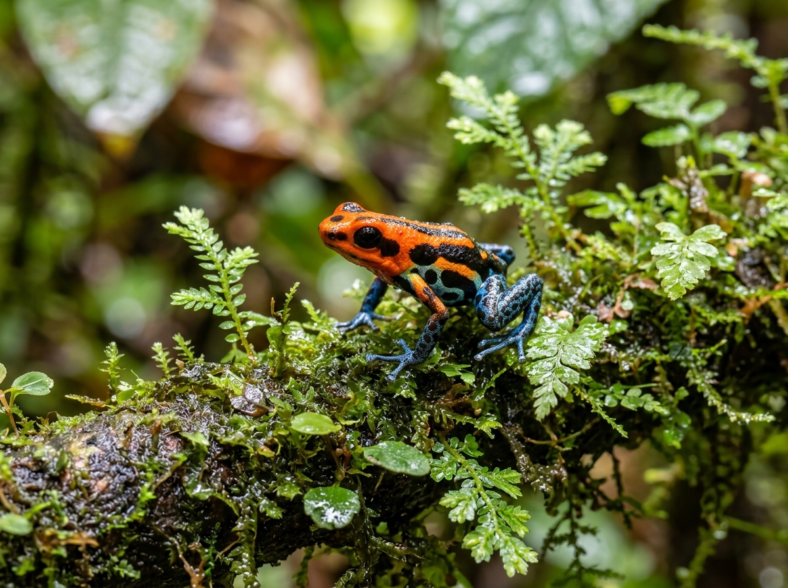

Fauna • Amfibi Kanopi
Amazon Poison Dart Frog
Ranitomeya amazonicaKatak panah beracun mini diurnal dari lembah Amazon. Membutuhkan rongga bromelia berisi air untuk bertelur dan kanopi lumut lembap.
Suhu Ideal
22.0°C – 26.5°C
Kelembapan
80% – 100% RH
Pencahayaan
1,500 – 3,500 Lux
Habitat Tank
Tank 01 (Amazon)